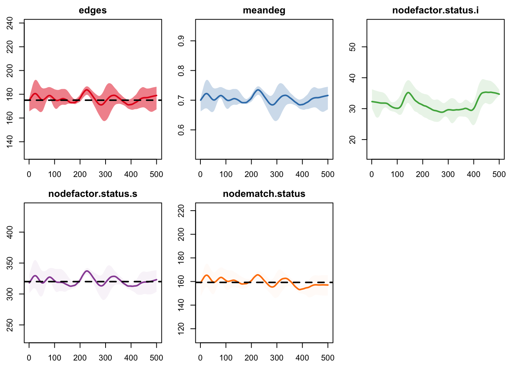
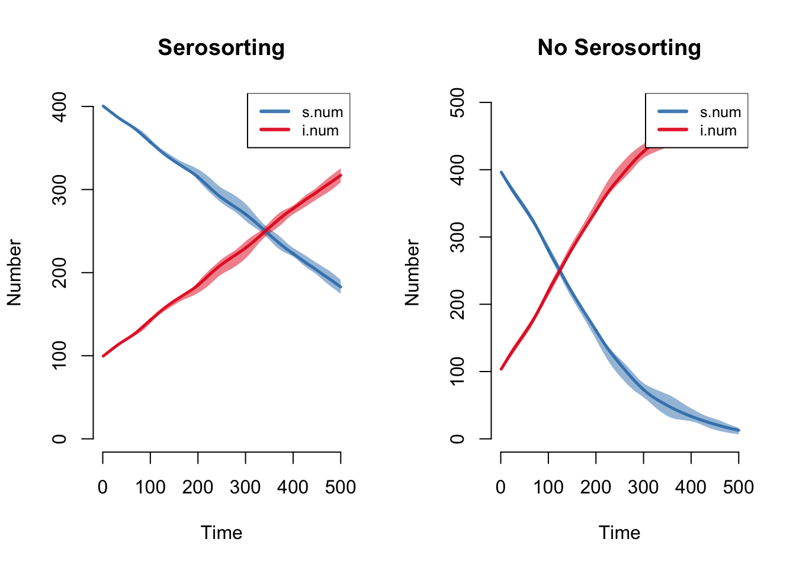

Tutorial 2: Serosorting
Day 3 | Network Models and HIV/STI with EpiModel | Harvard 2017
Network Model
First, we will set up our network and then calculate our first two sufficient statistics under the assumption that people with infection have a lower mean degree than those without infection. We are not yet considering how they match up.
n <- 500
nw <- network.initialize(n, directed = FALSE)Parameterization
The initial prevalence in the network will be 20%. Note that we need to specify a vertex attribute, which must be called status, for this model. This method assigns exactly 100 nodes as infected, but randomly selects which nodes those will be.
prev <- 0.2
infIds <- sample(1:n, n*prev)
nw <- set.vertex.attribute(nw, "status", "s")
nw <- set.vertex.attribute(nw, "status", "i", infIds)For the nodefactor terms that will allow the mean degree of the infecteds to differ from the susceptibles, we need to express them as the number of times an infected or susceptible show up in an edge. This is just the the group mean degree times the group size.
mean.deg.inf <- 0.3
inedges.inf <- mean.deg.inf * n * prev
mean.deg.sus <- 0.8
inedges.sus <- mean.deg.sus * n * (1 - prev)The number of edges is the sum of these two nodefactor statistics divided by 2.
edges <- (inedges.inf + inedges.sus)/2Nodematch Question: what is the number of node-matched edges under the null assumption that there is no matching on status but different activity levels for the two groups?
The exact solution: from population genetics, the Hardy-Weinberg formula. This just fills out a two-by-two table that contains the probabilities of a negative-negative, positive-positive, and negative-positive pair. The proportion of partnerships that are matched on status is the diagonal of the table, which is the sum of the negative-negative and positive-positive probabilities.
p <- inedges.sus/(edges*2)
q <- 1 - p
nn <- p^2
np <- 2*p*q
pp <- q^2
round(nn + pp, 3)[1] 0.843A simulation-based solution: we estimate an ergm in which there is no nodematch term but otherwise the same model, then simulate from that fitted model to monitor the expected number of matched edges. The proportion of matched edges is that number over the total edges.
fit <- ergm(nw ~ edges + nodefactor("status"),
target.stats = c(edges, inedges.sus))Evaluating log-likelihood at the estimate. sim <- simulate(fit, statsonly = TRUE, nsim = 1e5,
monitor = ~nodematch("status"))
mn <- colMeans(sim)
mn edges nodefactor.status.s nodematch.status
175.0177 320.0647 147.5934 round(as.numeric(mn[3]/mn[1]), 3)[1] 0.843Let us now imagine that there are in fact more within-group ties than expected by chance:
nmatch <- edges * 0.91Estimation
This tutorial will compare two models to assess the impact of serosorting on disease transmission:
- Model 1 features two forms of sero-adaptive behavior: different levels of activity by disease status, and matching on status.
- Model 2 has neither, so is just a Bernoulli model with same mean degree as Model 1.
Model 1
The network model with serosorting will include terms for both the number of times susceptible persons show up in an edge, as well as the number of node-matched edges overall. It is not necessary to specify the nodefactor term for the susceptibles because that is a function of total edges and the nodefactor term for the infecteds (the base level is always the first in alphabetical or numerical order, so “i” for our status variable level in this case). The average partnership duration in both models will be 50 time steps.
formation <- ~edges + nodefactor("status") + nodematch("status")
target.stats <- c(edges, inedges.sus, nmatch)
coef.diss <- dissolution_coefs(dissolution = ~offset(edges), 50)
est <- netest(nw, formation, target.stats, coef.diss)Unable to match target stats. Using MCMLE estimation.We run the network diagnostics on the model. Everything appears fine.
dx <- netdx(est, nsims = 5, nsteps = 500,
nwstats.formula = ~edges +
meandeg +
nodefactor("status", base = 0) +
nodematch("status"), verbose = FALSE)
dxEpiModel Network Diagnostics
=======================
Diagnostic Method: Dynamic
Simulations: 5
Time Steps per Sim: 500
Formation Diagnostics
-----------------------
Target Sim Mean Pct Diff Sim SD
edges 175.00 176.287 0.007 13.125
meandeg NA 0.705 NA 0.052
nodefactor.status.i NA 31.582 NA 6.419
nodefactor.status.s 320.00 320.992 0.003 25.361
nodematch.status 159.25 159.514 0.002 12.716
Dissolution Diagnostics
-----------------------
Target Sim Mean Pct Diff Sim SD
Edge Duration 50.00 44.374 -0.113 43.151
Pct Edges Diss 0.02 0.020 0.007 0.011plot(dx, plots.joined = FALSE)
plot(dx, type = "duration")
Model 2
The second model will include only an edges term, so no serosorting behavior but same amount of activity among nodes. After estimation, the diagnostics here look fine too.
nw <- network.initialize(n, directed = FALSE)
est2 <- netest(nw, formation = ~edges, target.stats = edges, coef.diss)
dx2 <- netdx(est2, nsims = 5, nsteps = 1000,
nwstats.formula = ~edges + meandeg)
dx2
plot(dx2, plots.joined = FALSE)
Epidemic Model
For the epidemic model, we will simulate an SI disease, with our two counterfactual network models. The first model will use the serosorting network model, and the second will be the random Bernoulli model.
Model 1
The model will only include one named parameter, for the transmission probability per contact.
param <- param.net(inf.prob = 0.03)The initial conditions are now passed through to the epidemic model not through init.net as with previous examples, but through the netest object that contains the original starting network with the vertex attributes for status. However, because netsim will still be expecting an initial conditions list, we need to create an empty one as a placeholder.
init <- init.net()For the control settings, we monitor the same network statistics as we did in the network diagnostics above, and do not save the network objects out to save disk space.
control <- control.net(type = "SI", nsteps = 500, nsims = 5,
nwstats.formula = ~edges +
meandeg +
nodefactor("status", base = 0) +
nodematch("status"),
save.network = FALSE)Here, we run the model. We will return to it to compare output later.
sim <- netsim(est, param, init, control)Model 2
The second model includes the same epidemic parameters as Model 1, but the initial conditions now must be specified because the network object in that second network model did not contain the status attribute. We use the status.rand argument to make sure that exactly 100 nodes are infected in this model too.
param <- param.net(inf.prob = 0.03)
init <- init.net(i.num = n*prev, status.rand = FALSE)
control <- control.net(type = "SI", nsteps = 500, nsims = 5,
nwstats.formula = ~edges + meandeg,
save.network = FALSE)
sim2 <- netsim(est2, param, init, control)Results
In reverse of our usual approach, we’ll look at the epidemic results first and then the network diagnostics, because the network statistics will be a function of the epidemiology.
Here we see that the serosorting model grows much less quickly than the random model. The reasons are that nodes lower their mean degree upon infection, therefore have fewer partners over time, and also tend to preferentially partner with other infecteds.
par(mfrow = c(1,2))
plot(sim, main = "Serosorting")
plot(sim2, main = "No Serosorting")
Another method to show the relative difference is to plot the two epidemic trajectories together. This requires a custom legend.
par(mfrow = c(1,1))
plot(sim, y = "i.num", popfrac = TRUE, sim.lines = FALSE, qnts = 1)
plot(sim2, y = "i.num", popfrac = TRUE, sim.lines = FALSE, qnts = 1,
mean.col = "firebrick", qnts.col = "firebrick", add = TRUE)
legend("topleft", c("Serosort", "Non-Serosort"), lty = 1, lwd = 3,
col = c("steelblue", "firebrick"), cex = 0.9, bty = "n")
Now, here are the network statistics that we monitored in Model 1. In contrast to our previous tutorials, where we expected stochastic variation around the targets to be preserved over time, here every network statistic varies.
plot(sim, type = "formation", plots.joined = FALSE)
Notice first that the nodefactor statistics are moving in opposite directions: as the prevalence of disease increases from 20% to approximately 50% at time 500, the number of infected nodes in an edge increases. The quantity preserved is not the number of infected nodes in an edge that we set as a target (30 nodes); rather, it is the log-odds of an infected node in an edge conditional on other terms in the model.
plot(sim, type = "formation", stats = c("nodefactor.status.s",
"nodefactor.status.i"))
Second, note that the total edges and node-matched edges decline over time. This plot shows those two statistics from one simulation only for clarity. Ordinarily the mean degree is preserved even in a population with drastically changing size, due to the network density correction that automatically occurs in netsim.
plot(sim, type = "formation",
stats = c("edges", "nodematch.status"),
sims = 1, sim.lwd = 2)
But in this case, the edges and mean degree are shrinking because the number of nodes in the network with the same status is steadily increasing, which draws the node match statistic lower since there are fewer susceptible-susceptible pairs available. Since the edges is a constant multiple of node-matched edges, they move together.
After looking at so many models where the target statistics were preserved throughout the simulation, this may seem like odd or undesirable behavior here. If it does, think about the main assumption we began with: men who are infected tend to have lower rates of partnering than men who are not infected. Perhaps this is because they are ill, or because they are trying to protect others. If this is the case, then what should we expect to happen to the overall rate of partnering as the proportion of men who are infected increases? Presumably it should go down, which is precisely what we see.
This behavior does mean that it can be difficut to tease apart the different contributions of serosorting to the disease dynamics that we see. How much of serosorting’s effect on lowering transmission came from the rate of overall partner reductions for infected men, and how much came from the homophily effect where infected men partner with each other relatively more? Although we included both in our model (through the nodefactor and nodematch terms, respectively), one could easily consider intermediate models that only included one term or the other, and then compare the results of each to the two models we already considered. We would then have a sense of the individual effects of each of these behavioral components, as well as their combined effect. Is the latter additive, less than additive, or more than additive (i.e. synergistic?)
Last updated: 2017-06-28 with EpiModel v1.5.0